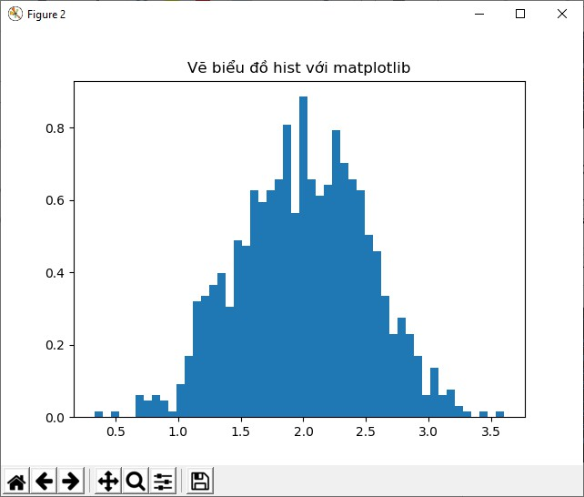
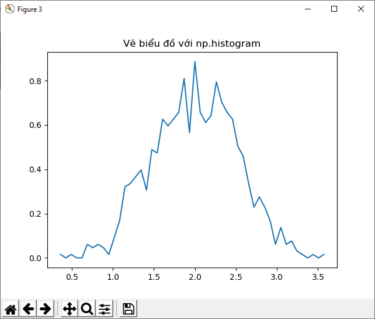

NumPy cơ bản trong Python
Lời nói đầu
NumPy là một thư viện không thể thiếu khi ta làm việc với mảng trong Python. NumPy là viết tắt của từ Nummerical Python. Trong numPy chiều của array được gọi là axes và số chiều gọi là rank
Trước khi đọc về numPy bạn cần phải cài đặt python và package numPy. Nhanh nhất là cài pycharm vào settings-> cài package numPy
Những thứ cơ bản
Về cơ bản dễ hiểu thì NumPy chính là một mảng đa chiều đồng nhất. Nó là một bảng gồm các thành phần (thường là số), và có cùng định dạng, được chỉ định các mục bởi số nguyên dương. Trong Numpy các chiều được gọi là axes.
Ví dụ . ta có 1 tọa độ của một điểm trong không gian 3D [1,2,1] có 1 trục(axis). Trục này có 3 thành phần trên nó nên ta nói nó có độ dài là 3.
Ta có ví dụ khác:
[[1.,0.,0.],
[0.,1.,2.]]
ở ví dụ này ta có một array gồm 2 trục(axes). trục đầu tieen có độ dài là 2 và trục thứ 2 có độ dài là 3.
NumPy array class được gọi là ndarrray. chú ý numpy.array không giống với array.array trong Python Lybrary vì array.array chỉ có 1 chiều. Những thuộc tính quan trọng nhất trong ndarray object là:
import numpy as np
def mprint(str):
print("x"*30,str,"x"*30)
mprint("Cơ bản về về Numpy:")
mprint("Tạo mảng một chiều từ list")
a = np.array([1, 2, 3])
print(type(a)) #<class 'numpy.ndarray'>
print(a.shape) #(3,)
a[0] = 5
print(a) #[5 2 3]
b = np.array([[1, 2, 3], [4, 5, 6]])
print(b.size) #6
print(b)
# Tạo mảng từ khoảng cho trước
u = np.arange(3.0)
print(u) #[0. 1. 2.]
v = np.arange(3, 7)
print(v) #[3 4 5 6]
Một lỗi thường gặp trong khi khởi tạo numPy
a=np.array(1,2,3) # => Sai
a=np.array([1,2,3]) # => Đúng
Thường thì các thành phần trong một array không xác định, nhưng size thì phải biết trước. Vì thế NumPy đưa cho chúng ta một vài hàm để tạo mảng
# np.zeros tạo ma trận số 0 với shape(số cột,số hàng)
a = np.zeros((5, 3))
print(a)
#[[0. 0. 0.]
# [0. 0. 0.]
# [0. 0. 0.]
# [0. 0. 0.]
# [0. 0. 0.]]
#np.ones tạo mảng 2 chiều số 1 tương tự zeros
b = np.ones((5, 2))
# np.full() tạo mảng hằng số tham số tương tự như trên với shape gồm shape(số hàng,số cột), và tham số thứ 2 là hằng số cần tạo
c = np.full((3, 5), 3)
print(c)
# [[3 3 3 3 3]
# [3 3 3 3 3]
# [3 3 3 3 3]]
#np.eye(N,M,k) tạo ma trận chéo với N hàng và M cột, nếu không gán giá trị M thì mặc định M sẽ = N , tham số k (tùy chọn, mặc định là 0) là chỉ số đường chéo
d = np.eye(5)
print(d)
#[[1. 0. 0. 0. 0.]
# [0. 1. 0. 0. 0.]
# [0. 0. 1. 0. 0.]
# [0. 0. 0. 1. 0.]
# [0. 0. 0. 0. 1.]]
print("-"*45)
# np.random.random((N.M)) Tạo ma trận ngẫu nhiên với N hàng M cột, với giá trị ngẫu nhiên từ 0->1
e=np.random.random((2,3))
print(e)
#[[0.67471134 0.96878567 0.13359926]
# [0.98475084 0.7250046 0.00370332]]
print(np.empty((2,3)),"Tạo mảng với np.empty cũng tương tự như với np.random.random")
# Để tạo một dãy số NumPy có một hàm tương tự với range trong Python là np.arange, nó trả về một array thay vì là một list số nguyên như range
print(np.arange(10,30,5),"Tạo mảng từ 10 - tới 30 với số bước là 5")
print(np.arange(0,3,0.3)," np.arange cũng chấp nhận giá trị là số float")
# Khi dùng float làm tham số cho arange. Nó thường tạo ra một dãy số không thể xác định nên ta thường sử dụng thêm np.linspace để mặc định số phần tử được tạo ra thay vì số bước
print(np.linspace(0,2,9),"np.linspace(0,2,9) Tạo ra 9 phần tử là số float từ 0-2")
print(np.linspace(0,np.pi,180),"hoặc lấy số điểm trong 1 hình tròn")
Các phép tính cơ bản trong NumPy
x = np.array([[1, 2], [3, 4]], dtype=np.float64)
y = np.array([[5, 6], [7, 8]], dtype=np.float64)
print("ma trận x:",x)
print("ma trận y:",y)
print(np.add(x, y) , "phép cộng")
print(np.subtract(x, y),"phép trừ")
print(np.divide(x, 2),"phép chia mảng 1 cho 2 ")
print(np.divide(x, y),"phép chia 2 mảng")
print(np.multiply(x, y),"phép nhân 2 mảng")
print(np.sqrt(x),"phép khai căn trên 1 mảng ")
print(np.sqrt((x,y)),"phép khai căn trên 2 mảng ")
mprint(" Phép toán trên hàng và cột ")
print(np.sum(x)," Tổng các giá trị trong ma trận x")
print(x.T,"phép chuyển vị ma trận x")
mprint("Phép toán nhân ma trận: Tích trong (inner Product)")
x = np.array([[1, 2], [3, 4]])
y = np.array([[5, 6], [7, 8]])
v = np.array([9, 10])
w = np.array([11, 12])
d = np.array([3, 4])
print("Ma trận x:\n",x)
print("Ma trận y:\n",y)
print("Ma trận v:\n",v)
print("Ma trận w:\n",w)
print("Ma trận d:\n",d)
print(np.dot(v, w),"= 9*11+10*12")
print(np.matmul(x, v),"= [9*1+10*2,9*3+10*4]")
print(np.dot(v, d)," = 9*3+10*4")
print(np.matmul(x, y),"= [[5*1+7*2,6*1+8*2],[5*3+7*4,6*3+8*4]]")
print(np.multiply(x, y),"= [[1*5,2*6],[3*7+8*4]]")
# Một vài phép toán giống như là += hay *= thường thay đổi các thành phần trong array chứ không tạo một array mới
a = np.ones((2,3), dtype=int)
b = np.random.random((2,3))
a *= 3
print(a)
#[[3, 3, 3],
# [3, 3, 3]]
b += a
print(b)
#[[ 3.417022 , 3.72032449, 3.00011437],
# [ 3.30233257, 3.14675589, 3.09233859]]
try:
a+=b
except TypeError:
print("ta không thể dùng thế này a += b, vì b là số float không tự động chuyển thành số nguyên nên sẽ báo lỗi TypeError")
#TypeError: Cannot cast ufunc add output from dtype('float64') to dtype('int64') with casting rule 'same_kind'
# Khi ta thực hiên phép toán trên các array với các định dạng khác nhau thì định dạng ở kết quả sẽ tự động lấy giá trị là các định dạng có tính chi tiết hơn
a = np.ones(3, dtype=np.int32)
b = np.linspace(0,np.pi,3)
print(b.dtype.name)
#'float64'
c = a+b
print(c)
#[ 1. , 2.57079633, 4.14159265])
print(c.dtype.name)
#'float64'
d = np.exp(c*1j)
print(d)
#[ 0.54030231+0.84147098j, -0.84147098+0.54030231j,
# -0.54030231-0.84147098j]
print(d.dtype.name)
# complex128
#Một vài phép tính thực hiện trong các phần tử của array như sum(), hay lấy min,max
a = np.random.random((2,3))
print(a.sum())
#2.5718191614547998
print(a.min())
#0.1862602113776709
print(a.max())
#0.6852195003967595
#Mặc định là những phép toán trên sẽ tính toán tất cả các phần tử của array không cần biết định dạng của nó là gì. Nhưng chúng ta cũng có thể chỉ định
# nó tính toán theo hàng hoặc cột của array
b=np.arange(12).reshape(3,4)
print(b.sum(axis=0),"= 1 array tính tổng trên mỗi cột")
print(b.min(axis=1),"= 1 array số nhỏ nhất thuộc mỗi hàng ")
print(b.cumsum(axis=1),"= 1 array giữ nguyên định dạng với mỗi hàng được tính lũy tiến")
Trong NumPy cũng có một số hàm toán cơ bản như sin,cos,và exp. Và chúng được gọi là "universal functions) ufunc
Indexing(lấy phần tử dựa vào index), Slicing(cắt) and Iterating(lặp)
array 1 chiều có thể lấy index,slice hay lặp giống như list trong Python
a=np.arange(10)**3
print(a,"Mảng a được tạo với 10 phần tử từ 0->10 và toán tử ** lấy số mũ mỗi phần tử")
print(a)# out [ 0 1 8 27 64 125 216 343 512 729]
# INDEXED
print(a[2]," vị trí thứ 3 index tính từ vị trí 0")
print(a[2:5]," lấy giá trị từ vị trí 3->vị trí 4")
# Gán
a[:6:2]=-1000
# Dấu : tượng trưng cho bắt đầu từ vị trí 0 tới vị trí số 6 cách mỗi 2 bước thì gán giá trị đó =-1000
print(a,"Dấu : tượng trưng cho bắt đầu từ vị trí 0 tới vị trí số 6 cách mỗi 2 bước thì gán giá trị đó =-1000")
a=a[: : -1]
print(a,"Đảo các phần tử từ cuối lên đầu ndarray")
# Duyệt qua tất cả các phần tử trong mảng với for và thực hiện phép tính với phần tử
for i in enumerate(a):
d=i[-1]**(1/3.)
print(str(round(d,2)),str(i[-1]),"lũy thừa ",str(round(1/3.,2))," của phần tử thứ : "+str(i[0]))
Mảng nhiều chiều và thay đổi Shape của mảng
mprint("Mảng nhiều chiều - Ma trận")
def f(x,y):
print(x)
print("xxx")
print(y)
print("-"*41)
return x*10+y
b=np.fromfunction(f,(5,4),dtype=int)
# hàm np.fromfunction(func,shape,type) là một hàm xây dựng mảng 2 chiều bằng cách gán một tham số là một hàm, và hàm này sẽ thực hiện trên mỗi tọa độ của ma trận
# tham số func: Là hàm được gọi cùng với tham số N, và N là dạng của ma trận ở tham số shape, như ví dụ trên thì với N = tuple (5,4) ma trận trả về sẽ có 5 hàng và 4 cột, hàm f sẽ trả về giá trị tại từng tọa độ điểm với x tăng dần theo cột từ 0->4 sau đó *10 và cộng với y tăng dần theo hàng từ 0->3
# shape: là một tuple hoặc số int: shape là số chiều của array output
# dtype: kiểu giá trị của elements
print(b)
#[[ 0 1 2 3]
# [10 11 12 13]
# [20 21 22 23]
# [30 31 32 33]
# [40 41 42 43]]
print(b[2,3]," giá trị tại hàng 3 cột 4 index tính từ 0")
print(b[0:5,1]," giá trị từ hàng 1->4 tại cột 2")
print(b[:,1]," Tất cả giá trị có ở cột 2")
print(b[1:3,:]," lấy giá trị ở hàng 2->3 tại tất cả các cột")
print(b[1:3,1:3]," lấy giá trị ở hàng 2->3 tại cột 2 và 3")
# Khi chúng ta chỉ lấy index tại hàng thì xác định là lấy tất cả các cột
print(b[-1]," = b[-1] cũng bằng giá trị với b[-1,:], tại hàng cuối lấy giá trị tất cả các cột")
d=np.reshape(b,b.size) # làm phẳng array b
c=d[0:16]
c=c.reshape((2,2,4))
print(c," reshape lại c thành array 3 chiều")
# Giờ thì ta có 1 array 3 chiều và khá khó sử dụng. Nên ta có thêm khái niệm dấu 3 chấm (...) nó tương đương với dấu ":", ở array 2 chiều thì ta có thể sử dụng dấu : để lấy hết giá trị tại cột hay hàng đó mà không cần tới dấu (...)
# nhưng ở array 3 chiều thì dấu ... có thể tượng trưng luôn cho 2 dấu ":" ta có vd sau
print(c[...,2]," c[...,2] cái này có giá trị tương đương với c[:,:,2]")
#hoặc
print(c[1,...],"c[1,...] cái này cũng giống với c[1,:,:]")
# Dấu ... có ý nghĩa lớn nếu ta sử dụng mảng nhiều chiều
# Khi chúng ta dùng for để lặp lấy các giá trị của mảng nhiều chiều thì mặc định sẽ trả về giá trị tại trục đầu tiên vd
print("Array 2 chiều")
for r in b:
print("-" * 30)
print(r)
print("Array 3 chiều")
for r in c:
print("-"*30)
print(r)
# Ta có thể flat (làm phẳng) array và duyệt qua tất cả các giá trị (phần tử) có trong mảng:
print("Array 2 chiều")
for e in b.flat:
print("-" * 30)
print(e)
print("Array 3 chiều")
for e in c.flat:
print("-"*30)
print(e)
# Các cách thay đổi định dạng của array từ 1 chiều -> 2 chiều -> 3 chiều và ngược lại
mprint("Reshape Array")
print(a.T)
a=np.floor(10*np.random.random((3,4)))
print(a)
# Tạo một mảng 2 chiều giá trị phần tử ngẫu nhiên với 3 hàng và 4 cột
# Trước tiên ta cần làm phẳng array
# Cách 1 dùng np.reshape
c=np.reshape(a,a.size);print(a,"Chuyển đổi từ array 2 chiều thành 1 chiều với np.reshape",c)
# Cách 2 dùng flatten
d=a.flatten();print(a,"Chuyển đổi từ array 2 chiều thành 1 chiều với flatten()",d)
# Cách 3 dùng ravel()
e=a.ravel();print(a,"Chuyển đổi từ array 2 chiều thành 1 chiều với ravel()",e)
print(a.reshape(6,2)," Chuyển đổi định dạng của array từ 3 hàng 4 cột thành 6 hàng 2 cột")
print(a," về cơ bản thì array a vẫn không thay đổi, khi ta sử dụng ravel flatten ta phải gán biến cho nó")
# Khi ta muốn thay đổi định dạng của một array thì ta sẽ có thêm 1 hàm khác để làm điều đó resize()
a.resize(2,6)
print(a)
#Khi một tham số trong tuple(x,y) để reshape lại array mà có 1 tham số là -1 thì số đó sẽ được tính một cách tự động vd
print(a.reshape(-1,4)," reshape với 1 chiều =-1 thì chiều này sẽ được tự động tính")
a=[1,2]
print("list a:\n",a)
print("type of a",type(a))
a=np.asarray(a)
print("type of a",type(a))
a=np.arange(6);print(a," Thay đổi array a giữ nguyên dữ liệu")
b=a.reshape(3,2);print(b," Chuyển đổi thành array 2 chiều với 3 hàng và 2 cột")
print(b.size," Tổng số phần tử của array 2 chiều a.size")
b=a.reshape(3,2)
c=a.reshape(3,2)
print(b)
print(np.insert(b,0,5),"sử dụng hàm np.insert(array,cột,giá trị) thêm giá trị vào cột 1 với giá trị bằng 5 và làm phẳng array")
print(np.insert(c,1,3,axis=1),"sử dụng hàm np.insert(array,cột,giá trị,axis=x) chèn thêm giá trị vào cột 2 với giá trị bằng 3,không thay đổi cấu trúc array với tham số axis=1")
print(np.insert(c,0,3,axis=0),"Sử dụng hàm np.insert(array,cột,giá trị,axis=x) chèn vào hàng 1 một hàng có giá trị bằng 3,không thay đổi cấu trúc array với tham số axis=0")
Xếp chồng các mảng lên nhau:
Một vài Aray có thể chồng lên nhau dựa trên các trục
a=np.floor(10*np.random.random((2,2)))
print(a)
b=np.floor(10*np.random.random((2,2)))
print(b)
print(np.vstack((a,b))," Chồng array theo trục dọc (cột) ")
print(np.hstack((a,b))," Chồng array theo trục ngang(hàng)")
#Hàm np.column_stack là chồng 2 array 1 chiều lên nhau thành 1 array 2 chiều. nó cũng giống như np.hstack khi dùng cho mảng 2 chiều
from numpy import newaxis
print(np.column_stack((a,b)),"column_stack với array 2 chiều")
a=np.array([3.,4.,5.])
b=np.array([6.,8.,1.])
print(a)
print(b)
print(np.column_stack((a,b))," Chồng (stack) 2 array 1 chiều lên nhau thành 1 array 2 chiều")
print(np.column_stack((a,b)).shape)
print(np.hstack((a,b))," Kết quả này khác khi dùng column_stack")
print(a[:,newaxis]," Thêm trục để chuyển đổi từ array 1 chiều thành 2 chiều")
# Mặt khác hàm row_stack cũng giống như vstack. Nhưng khác với column_stack có điểm khác nhau khi chồng array 1 chiều còn row_stack không khác biệt nhiều với bất kỳ array 1 hay 2 chiều
# Khi làm việc với array nhiều hơn 2 chiều thì hstack sẽ ghép với trục thứ 2 (axes=1) và vstack sẽ ghép vào trục 1(axes=0)
# Ngoài ra bạn có thể dùng np.concatenate((arr1,arr2),axes=n) với tham số n để chỉ định ghép array ở vị trí nào
*Note
Ngoài ra bạn có thể dùng np.c_ và np.r_ cũng có thể stack với nhiều tham số tùy chọn để tạo matrix
Tách mảng thành nhiều mảng nhỏ
sử dụng numpy.hsplit hay numpy.vsplit hoặc array_split để chia mảng thành mảng nhỏ
a=np.floor(10*np.random.random((2,12)))
print(a)
#[[1. 7. 9. 9. 1. 0. 0. 2. 7. 5. 9. 7.]
# [3. 1. 9. 2. 9. 2. 7. 7. 8. 7. 7. 3.]]
print(np.hsplit(a,3)," Chia array thành 3 array nhỏ")
#[array([[1., 7., 9., 9.],
# [3., 1., 9., 2.]]), array([[1., 0., 0., 2.],
# [9., 2., 7., 7.]]), array([[7., 5., 9., 7.],
# [8., 7., 7., 3.]])] Chia array thành 3 array nhỏ
# Với Array nhiều chiều thì khi phân chia sẽ vẫn theo trục đầu tiên
a=np.arange(8.0).reshape(2,2,2)
print(a)
#[[[0. 1.]
# [2. 3.]]
# [[4. 5.]
# [6. 7.]]]
print(np.vsplit(x,2))
#[array([[1, 2]]), array([[3, 4]])]
Copies and Views
Khi xử lý và vận dụng với Arrays, dữ liệu của chúng đôi khi được sao chép và đôi khi thì không cần sao chép, nó thường gây nhầm lẫn. có 3 Trường hợp hay dùng
No Copy( chẳng copy hay làm gì cả)
a=np.arange(6)
b=a
print(b is a," Cái này trả về True vì b hay a thì nó chỉ là tên của cùng một ndarray")
b.shape=3,4
print(a.shape," Ta đã gán shape cho b nên a thay đổi theo")
Views or Shallow Copy( sao chép nông nông :D )
Các mảng khác nhau có thể chia sẻ cùng 1 dữ liệu. Hàm view() tạo một mảng mới có dữ liệu dựa vào mảng ban đầu
c=a.view()
print(c is a," Trả về False vì c không phải là a")
print(c.base is a," Trả về True vì c có dữ liệu dựa trên a")
print(c.flags.owndata," Trả về False vì c không chứa dữ liệu")
c.shape=2,6
print(a.shape," shape của a không thay đổi")
c[0,4]=1234 # a sẽ thay đổi giá trị
print(a," Giá trị của a bị thay đổi theo c")
#[[ 0 1 2 3]
# [1234 5 6 7]
# [ 8 9 10 11]]
# Cắt array (slicing) ra để sử dụng cũng tương đương với việc view dữ liệu trên array cũ.
# Cái này mọi người hay nhầm nhất
s=a[:,1:3] # Slice array a lấy tất cả giá trị các cột 2 và 3
s[:]=10 # Gán tất cả các giá trị trong array s thành 10, Chú ý, s=10 khác với s[:]=10
print(a," Giá trị cột 2 và 3 biến thành 10 khi ta thay đổi view s")
Deep Copy
Phương thức copy() là tạo một array mới sao chép toàn bộ dữ liệu của array cũ và khi thao tác trên array mới sẽ không ảnh hưởng đến array cũ
d=a.copy()
print(d is a," Trả về False vì chẳng còn liên quan gì đến a")
print(d.base is a," Trả về False vì chẳng còn liên quan gì đến a")
d[0,0]=100000
print(a," a không thay đổi vì d với a không chia sẻ cái gì")
Những thứ méo cơ bản
numpy.broadcast
Thuật ngữ Broadcast trong numpy là khi nó xử lý các mạng với các shape khác nhau trong các phép toán.
Nếu tất cả các arrays không có cùng số chiều, thì số 1 sẽ được thêm vào cho tới khi shape của các array đó giống nhau.
Đọc thêm về Broadcasting và các ví dụ tại Broadcasting
Lập các chỉ mục vị trí (index) của array bằng 1 array
(Indexing with Arrays of Indices)
Lập chỉ mục: là vị trí index (lấy giá trị elements của array thông qua các số này) của một array 1 chiều hay nhiều chiều ta có thể tạo một array khác chứa các index này (số nhiều indices)
a=np.arange(12)**2 # Tạo một Array 1 chiều với 12 giá trị là lũy thừa của 2
print(a," Array a")
#[ 0 1 4 9 16 25 36 49 64 81 100 121] Array a
i=np.array([1,1,3,8,5]) # Tạo một array gồm các index ( chỉ mục cho phần tử) của array a
print(a[i]," Trả về các phần tử trong array a có index là i")
#[ 1 1 9 64 25] Trả về các phần tử trong array a có index là i
j=np.array([[3,4],[9,7]]) # Tạo một array 2 chiều có các giá trị là chỉ mục cho array a
print(a[j]," Trả về 1 array có các phần tử trong array a ở vị trí j nhưng có shape là array j")
#[[ 9 16]
#[81 49]] Trả về 1 array có các phần tử trong array a ở vị trí j nhưng có shape là array j
Khi lập chỉ mục cho một array nhiều chiều, một array chỉ mục cho array a sẽ lấy chiều đầu tiên của a (thường tính theo hàng trục đầu tiên axes = 0 ). VD ta muốn chuyển mã màu của một hình ảnh thành một bức ảnh màu sử dụng một bảng màu.
# Bảng màu RGB
pallete=np.array([
[0,0,0], # Màu đen
[255,0,0], # Màu đỏ
[0,255,0], # Màu xanh lá cây
[0,0,255], # Màu xanh da trời blue
[255, 255,255], # Màu trắng
])
image=np.array([
[0,1,2,0],
[0,3,4,0]
])
print(pallete[image])
#[[[ 0 0 0]
# [255 0 0]
# [ 0 255 0]
# [ 0 0 0]]
#
# [[ 0 0 0]
# [ 0 0 255]
# [255 255 255]
# [ 0 0 0]]]
Khi muốn lập chỉ mục nhiều hơn 1 chiều như trên. ta có thể tạo nhiều array chứa chỉ mục cho mỗi chiều- những array này phải có chung 1 shape
# Tạo một array 2 chiều với 3 hàng và 4 cột
a=np.arange(12).reshape(3,4)
print(a,"Array mẫu")
#[[ 0 1 2 3]
# [ 4 5 6 7]
# [ 8 9 10 11]]
# Array chứa index chỉ mục cho trục thứ 1 (chiều thứ 1)
i=np.array([
[0,1],
[1,2]
])
# Array chứa index chỉ mục cho trục thứ 2 (chiều thứ 2)
j=np.array([
[2,1],
[3,3]
])
d=a[i,j]
print(d," Array d trả về có shape giống Array chứa index chỉ mục")
print("với i[0]=[0,1] và j[0]=[2,1] sẽ trả về giá trị d[0] = hàng 0(vị trí i[0][0]=0) và cột 2(vị trí j) ở array mẫu và có giá trị = 2, tương tự hàng 1 cột 1 = 5 ~ [2,5]")
print(a[i,2]," Array trả về sẽ có shape giống array i, còn số 2 tương đương với array j có dạng j=[[2,2],[2,2]]")
j=np.array([
[2,1,0],
[3,1,3]
])
# Shape đỏi shape (2,3) cho array j
print(j.shape)
print(a[:,j]," Array trả về sẽ có shape tương đương chồng (stack) từng hàng của array a (1 chiều) lên array j sẽ tạo thành 1 array 3 chiều"
"gồm 4 mục ( số lượng elements tại trục thứ 1 của array a ), mỗi mục có shape giống shape của array j (2,3)"
"Dấu : tương đương với tất cả các index 'n' của a tính theo hàng và tạo array dưới dạng a[n,j]")
print(a[:,j].shape," shape 3 chiều của array kết quả có dạng trục 1 là trục của array a, trục 2,3 có dạng shape của array j")
# Thông thường chúng ta thường bỏ 2 array chỉ mục i,j vào 1 list và sau đó index list này
j=np.array([
[2,1],
[3,3]
])
l=tuple([i,j]) # Nên dùng tuple không thằng numPy nó thay đổi rồi :D đọc warning thấy thế nên theo mình dùng kiểu [i,j] cho lẹ
print(a[l]," kết quả tương đương khi sử dụng a[i,j]")
#Hoặc lấy một khoảng index
print(a[i,1:3],"Dấu 1:3 tương đương với tất cả các index '1->3' của a tính theo hàng và tạo array dưới dạng a[i,1] ,a[i,2]")
#Hoặc lập chỉ mục một cách trực tiếp bằng cách gán 1 mảng vào đó
a=np.arange(5)
print(a)
a[[1,2,4]]=0
print(a) #[0 1 2 3 4] => [0 0 0 3 0]
# Nếu các index được lặp lại nhiều lần trong array chỉ mục thì nó sẽ nhận giá trị cuối cùng được gán
a=np.arange(5)
a[[1,1,2]]=[0,8,9]
print(a) #[0 1 2 3 4] => [0 8 9 3 4]
# Giờ thì chuyện gì sẽ xảy ra nếu ta gán toán tử += hay -= khi gán giá trị chỉ mục ?
a=np.arange(5)
a[[1,2,3]]+=1
print(a," vẫn đúng với các giá trị từ 1->3 tăng thêm 1 đơn vị")
# Còn lặp lại thì sao ?
a=np.arange(5)
a[[1,1,2]]+=1
print(a," giá trị ở cột thứ 2 sẽ được giữ nguyên đến khi nó thực hiện xong và tăng thêm 1 1 lần")
Lập chỉ mục với Array Boolean
Khi lập chỉ mục với một array chúng ta thường dùng một array chứa giá trị số index( vị trí) của array đó để lấy giá trị. Nhưng với một array không chứa giá trị số mà chứa giá trị là một list (hoặc array tùy cách hiểu :D ) boolean chúng ta có thể chọn những giá trị chúng ta muốn trong array gốc, vd như chọn số nguyên %2==0 hoặc lớn hơn 5(>5) hoặc số có 2 chữ số (>9)
xem ví dụ sau bạn sẽ rõ về cách sử dụng lập chỉ mục Boolean:
#Tạo array 2 chiều a từ 0->11 có shape 3 hàng 4 cột
a=np.arange(12).reshape(3,4)
# Tạo array boolean indices
b=a%2==0 # Lập chỉ mục array boolean với giá trị là số chẵn
print(b," Array boolean")
# Giờ thì biến tất cả các số chẵn này thành 1
a[b]=1
print(a,"Các số chẵn biến mất và đã được gán giá trị =1")
Ví dụ sau là cách sử dụng index Boolean để tạo một hình fractal giống Mandelbrot
# import package matplotlib để vẽ hình
import matplotlib.pyplot as plt
# Tạo một hàm vẽ fractal với chiều cao và rộng, maxit là độ nhiễu của fractal
def mandelbrot(h,w,maxit=80):
# Tạo một grid với numpy.ogrid
x,y = np.ogrid[-2:0.8:w * 1j,-1.4:1.4:h * 1j]
# Tạo 1 số phức để vẽ fractal đối xứng
c=x+y*1j
z=c
# Tạo mảng 0 divtime có shape giống mảng c
divtime=maxit+np.zeros(z.shape,dtype=int)
for i in range(maxit):
z=z**2+c
diverge=z*np.conj(z)>2**2
# Mảng boolean index
div_now=diverge&(divtime==maxit)
divtime[div_now]=i+50
z[diverge]=1j
return divtime
plt.imshow(mandelbrot(400,400,10))
plt.title("Fractal")
plt.show()
Hàm ix_()
Hàm ix_() dùng để kết hợp nhiều vector(vector là mảng 1 chiều, có dạng hàng x=[x1,x2,….,xn] hoặc cột y= ) biến đổi chúng thành các ma trận n chiều (n bằng số vector gộp). Ví dụ bạn có 3 vector a,b,c và giờ bạn muốn tính kết quả a+b*c cho mỗi cặp 3 từ các vector đó:
# Tạo 3 Vector có shape khác nhau
a=np.arange(4)+2
b=np.array([8,5,4])
c=np.array([5,4,6,8,3])
ax,bx,cx=np.ix_(a,b,c)
print(ax," a biến thành vector 3 chiều với chiều 1 là size của a")
print(ax.shape," là shape của vector a sau khi biến đổi")
print(bx," b biến thành vector 3 chiều với chiều 2 là size của b")
print(bx.shape," là shape của vector b sau khi biến đổi")
print(cx," c biến thành vector 3 chiều với chiều 3 là size của c")
print(cx.shape," là shape của vector c sau khi biến đổi")
# Tương tự nếu gộp nhiều vector với nhau
result=ax+bx*c
print(result," Là vector 3 chiều có giá trị là a+b*c có shape dưới dạng (a.size,b.size,c.size)")
print(result[3,2,1]," có giá trị tương đương khi ta sử dụng a[3]+b[2]*c[1]")
# OK giờ thì làm cho nó ngắn gọn đi 1 chút và có thể tái sử dụng
import functools
def ufunc(ufct, *vectors):
vs = np.ix_(*vectors)
r = ufct.identity
for v in vs:
r = ufct(r,v)
return r
# Giờ thì ta có thể sử dụng nó để tính toán bất kỳ trạng thái nào của 3 vector abc
print(ufunc(np.add,a,b,c))
Tự động reshape cho array
Để thay đổi chiều của một array các mày có thể đặt 1 chiều với giá trị là -1 để nó tự động đặt số còn lại.
a=np.arange(30)
a.shape=-1,3,2
print(a.shape," tự thay đổi số -1 bằng số thích hợp")
try:
a.shape=-1,3,4
except Exception as e:
print("Báo lỗi khi không gán được giá trị ở đây là lỗi: "+ str(type(e)) ,str(e))
Vẽ biểu đồ
hàm np.histogram(a, bins=10, range=None, normed=None, weights=None, density=None) trong đó a là một array phẳng (flattened array) đoc thêm tại np.histogram
Trong matplotlib cũng có hàm hist() để vẽ biểu đồ nhưng 2 cái này có điểm khác nhau. Điểm khác nhau chủ yếu là hist() phác họa biểu đồ 1 cách tự động còn. np.histogram chỉ tạo ra dữ liệu (return an array):
mu,sigma=2,.5
v=np.random.normal(mu,sigma,1000)
plt.figure()
plt.hist(v,bins=50,density=1)
plt.title("Vẽ biểu đồ hist với matplotlib")
plt.figure()
(n,bins)=np.histogram(v,bins=50,density=True)
plt.plot(.5*(bins[1:]+bins[:-1]),n)
plt.title("Vẽ biểu đồ với np.histogram")
plt.show()
Kết quả:
 
File ví dụ lấy ở đây NumpyTest.py